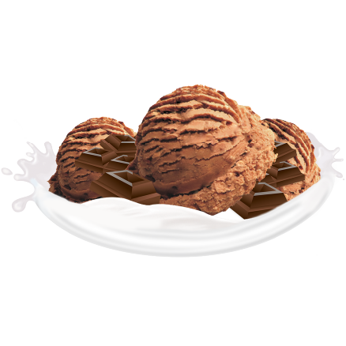
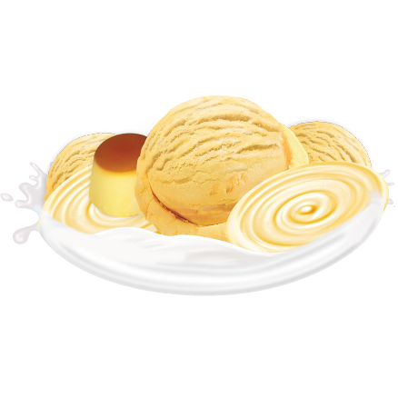

Sundae, sobremesa feita com sorvete com um sabor simples e encantador 🤤
A massa de sorvete do Sundae,multiplos sabores!
Massa de Morango 🍓
O sorvete em massa sabor morango é uma delícia com um gosto predominante de morango, apresentando uma cor rosa ou vermelha vibrante. Sua textura é suave e cremosa, graças aos ingredientes básicos como leite, açúcar, creme e morangos. Alguns podem incluir pedaços reais de morango para adicionar textura. O sabor varia, sendo alguns mais suaves e outros mais intensos. É uma escolha popular, encontrada em supermercados e sorveterias.
Massa de Chocolate 🍫
O sorvete em massa sabor chocolate é uma delícia conhecida por seu gosto rico e cremoso. Feito com ingredientes de qualidade, como leite, creme e cacau, ele tem uma textura suave e um sabor profundo. Algumas versões incluem pedaços de chocolate para tornar a experiência mais interessante. Pode ser desfrutado sozinho ou com coberturas variadas, como calda de chocolate ou nozes. É uma escolha popular em todo o mundo, sendo apreciado por pessoas de todas as idades.

Massa de Creme/Baunilha 🍦
O sorvete de baunilha é conhecido por seu sabor suave e delicado, com uma cor creme ou bege clara. Sua textura é cremosa, resultado da incorporação de ar durante o processo de fabricação. Feito com ingredientes como leite, creme, açúcar e extrato de baunilha, é uma escolha versátil que pode ser apreciada sozinha ou combinada com diversos toppings. Popular em todo o mundo, o sorvete de baunilha é um clássico associado à tradição, sendo usado como base para diversas sobremesas.

Adicionais no Sundae 🥜
Amendoim
O amendoim picado é um ingrediente versátil conhecido por sua textura crocante e sabor rico. Tanto utilizado em pratos doces como salgados, ele pode ser torrado para intensificar o sabor. Além de ser uma fonte de proteína e nutrientes, o amendoim picado é frequentemente usado em sobremesas, pratos asiáticos e como decoração final, proporcionando uma combinação única de sabores e texturas.
Bolinhas de Chcolate
Bolinhas de chocolate crocantes são pequenas delícias com uma cobertura de chocolate e um interior crocante, geralmente incorporando ingredientes como arroz tufado, cereal ou biscoitos triturados. Oferecem uma textura agradável e vêm em uma variedade de sabores, sendo frequentemente usadas como presentes ou petiscos em diferentes ocasiões. A versatilidade permite adaptações criativas e a combinação de diferentes ingredientes para criar opções únicas e saborosas.
Canudinhos wafers
Canudinhos wafer são produtos de confeitaria com formato cilíndrico, feitos de massa de wafer crocante. Geralmente recheados com diversos cremes, como chocolate ou avelã, são utilizados em sobremesas, milkshakes ou como petiscos individuais. Sua versatilidade permite usos criativos na cozinha, e são populares como presentes ou lembrancinhas. A textura crocante e o sabor suave tornam esses canudinhos perfeitos para o sundae.
Curiosidades sobre o Sundae!
Origem Contestada:
A origem exata do sundae é contestada. Uma das histórias mais conhecidas sugere que a sobremesa foi criada por um farmacêutico em Evanston, Illinois, em resposta à proibição de venda de sorvetes aos domingos. O termo "sundae" teria sido escolhido para não ofender sensibilidades religiosas.
Variação Ortográfica:
O nome "sundae" é frequentemente escrito dessa maneira, mas em alguns lugares, como o estado de Nova York, também é conhecido como "sunday." A variação na ortografia pode ser encontrada em diferentes regiões.
Versões Regionais:
O sundae tem várias versões regionais e variações em todo o mundo. Cada lugar pode ter suas próprias receitas e tradições associadas à preparação desta sobremesa.
Dia Nacional do Sundae:
O Dia Nacional do Sundae é celebrado nos Estados Unidos em 20 de julho. É uma ocasião para apreciar essa deliciosa sobremesa em todas as suas variedades.
Comemorações Locais:
Algumas cidades têm festivais ou eventos dedicados ao sundae. Isso inclui concursos de preparação de sundaes, onde as pessoas competem para criar as combinações mais saborosas e criativas.